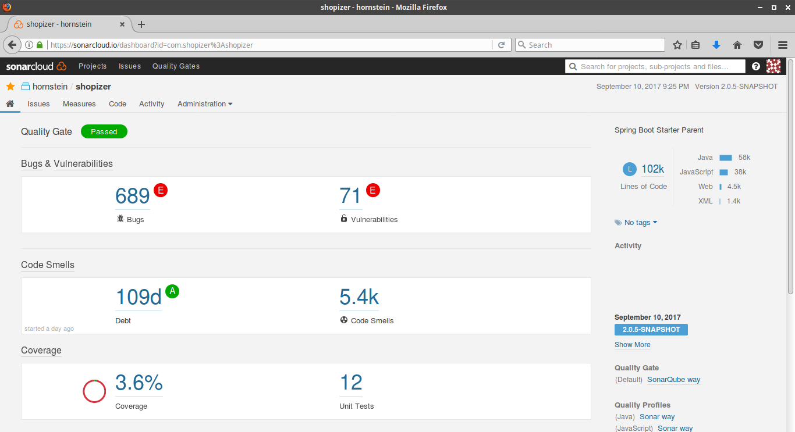

Till skillnad mot dynamisk testning, som kräver att programvaran exekveras, så förlitar sig statiska testtekniker på manuell kontroll (granskning) och automatiserad analys (statisk analys) av källkoden eller andra producerade dokument utan att programvaran exekveras.
Granskningar är ett sätt att testa arbetsprodukter (inklusive koden) och kan med fördel utföras före dynamisk testning. Defekter som upptäcks genom granskningar i ett tidigt skede (t ex granskningar av krav) är oftast mycket billigare att rätta än de defekter som hittas när man utför dynamisk testning av redan utvecklad kod.
Granskningar kan utföras helt manuellt, men det finns också verktygsstöd för detta. Den huvudsakliga manuella aktiviteten är att granska arbetsprodukten av ett arbete och kommentera de avvikelser man hittar. Alla arbetsprodukter kan granskas, inklusive kravspecifikationer, designspecifikationer, kod, testplaner, testspecifikationer, testfall, testskript, användarmanualer eller webbsidor.
Fördelarna med granskningar är tidig fellokalisering och rättning, ökad produktivitet inom utveckling, minskad utvecklingstid, minskad tid och kostnad för testning, minskade produktlivstidskostnader, färre fel i senare faser och förbättrad kommunikation.
Vid granskningar kan ofullständigheter upptäckas, t.ex. att krav saknas i en specifikation, vilket är svårt i dynamisk testning.
Granskningar, statisk analys och dynamisk testning har samma övergripande mål – påvisa fel.
De kompletterar varandra: de olika teknikerna ger möjlighet att effektivt och ändamålsenligt hitta olika typer av fel.
I motsats till dynamisk testning hittar statiska tekniker fel (defekter) snarare än själva felsymptomen.
Typiska defekter som är lättare att hitta med granskningar än med dynamisk testning innefattar:
De olika typerna av granskningar varierar från att vara informella, som kännetecknas av avsaknad av skrivna instruktioner till granskare, till systematiska, som kännetecknas av delaktighet av teamet, dokumenterade granskningsresultat och dokumenterad granskningsprocess.
Formaliteten hos en granskningsprocess är relaterad till faktorer såsom mogenhetsgraden i utvecklingsprocessen, varje legalt eller regulatoriskt krav eller behovet av uppföljning.
Hur en granskning genomförs är beroende av de överenskomna målen för granskningen (t.ex. hitta defekter, vinna samförstånd, utbilda testare och nya teammedlemar, eller diskussion och beslut med konsensus).
1. Planering: Definiera granskningskriterier, Välja personal, Tilldela roller, Sätta upp start- och avslutskriterier
2. Start: Dela ut dokument, Förklara målsättningen, processen och dokumenten som skall granskas för alla deltagare.
3. Individuella förberedelser: Arbete som genomförs enskilt av varje deltagare före granskningsmötet, Notera möjliga defekter, frågor och kommentarer.
4. Genomgång/utvärdering/dokumentering av resultat (Granskningsmöte): Diskussioner eller loggning, med dokumenterade resultat eller med mötesprotokoll. Ge rekommendationer för hur defekterna skall hanteras eller fatta beslut om defekterna.
5. Omarbete: Åtgärda de funna defekterna, utförs oftast av författaren. Uppdatera och dokumentera status på defekterna (vid formella granskningar)
6. Uppföljning: Kontrollera att alla defekter har blivit tilldelade för åtgärd, Sammanställa mätetal, Kontrollera att avslutskriterier är uppnådda (vid mer formella granskningstyper).
En typisk formell granskning innehåller följande roller:
Ledare/chef: bestämmer över genomförandet av granskningar, avsätter tid i projektplaner och avgör om målsättningen för granskningarna blivit uppfyllda.
Moderator: den person som leder granskningen av dokumentet eller uppsättningen av dokument. Det inkluderar planering av granskningen, hålla mötet, följa upp efter mötet och om nödvändigt medla mellan olika åsikter. Moderatorn är oftast den person som ligger bakom en lyckad granskning.
Författare: eller den person som ansvarar för dokumentet eller dokumenten som skall granskas.
Granskare: individer med en specifik teknisk eller verksamhetsbakgrund som, efter de nödvändiga förberedelserna, identifierar och beskriver t.ex. defekterna i det som granskats. Val av granskare skall göras så att de representerar olika områden och roller i granskningsprocessen och skall delta i granskningsmöten.
1. Informell granskning
ingen formell process; kan ske genom parprogrammering eller
att en teknisk ledare leder design- och kod-granskningen; frivilligt dokumenterad;
nyttan av granskningen kan variera beroende på granskaren; huvudsyfte:
att på billigaste sätt att uppnå en viss nytta.
2. Genomgång
mötet leds av författaren; kan ske med hjälp av scenarion,
torrsimulering, grupp med kolleger; ej tidsbegränsade sammanträden; följande
kan vara valfritt: granskarna är förberedda, granskningsrapport skrivs,
avvikelselista tas fram och sekreterare (som inte är författaren) utses;
kan variera i utförande från ganska informellt till mycket formellt; huvudsyfte: lärande, ge förståelse, hitta defekter.
3. Teknisk granskning
dokumenterad, definierad defektutpekningsprocess som inkluderar
kolleger och tekniska experter, ledningens deltagande är
valfritt; kan utföras som en granskning med kolleger utan ledarens/chefens
deltagande; önskvärt att granskningen leds av en utbildad moderator (inte
författaren); förberedelse innan mötet; valfritt användande av checklistor;
granskningsrapport som inkluderar defektlista, beslut om programvaran lever upp till kraven och,
där det är möjligt, rekommenderade åtgärder för defekterna; kan variera
i utförande från ganska informellt till mycket formellt; huvudsyfte: diskussioner,
beslutsfattande, utvärdering av alternativ, hitta defekter, lösa tekniska problem och kontroll av att det granskade stämmer överens med specifikationer, planer, regelverk och standarder.
4. Inspektion
leds av en utbildad moderator (inte av författaren); vanligtvis genomförd av jämlika kolleger;
definierade roller; inkluderar mätetal; formell process som är baserad på regler och checklistor;
definierade start- och avslutskriterier för att acceptera programvaran;
förberedelser innan mötet; inspektionsrapport, lista över iakttagelser;
formell uppföljningsprocess; (valfritt med processförbättringsprocess)
valfritt med uppläsare; huvudsyfte: hitta defekter.
Målsättningen med statisk analys är att hitta defekter i källkod och programvarumodeller. Statisk analys utförs genom granskning med hjälp av ett verktyg utan att programvaran exekveras; dynamisk testning exekverar programkoden. Statisk analys kan lokalisera defekter som är svåra att upptäcka med dynamisk testning. Precis som vid granskning hittar statisk analys defekter snarare än felyttringar. Statiska analysverktyg analyserar programkoden (t ex kontrollflöde och dataflöde), såväl som det utdata som genereras t.ex. HTML och XML.
